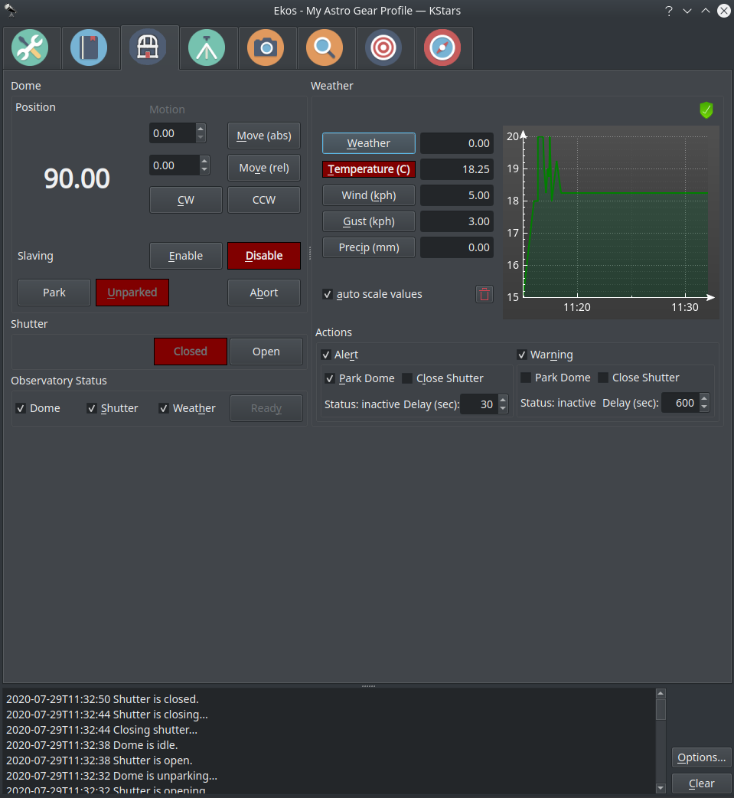
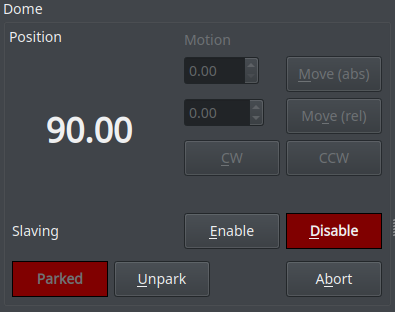
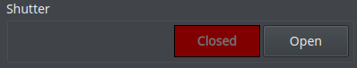
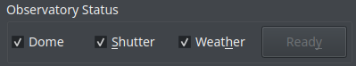
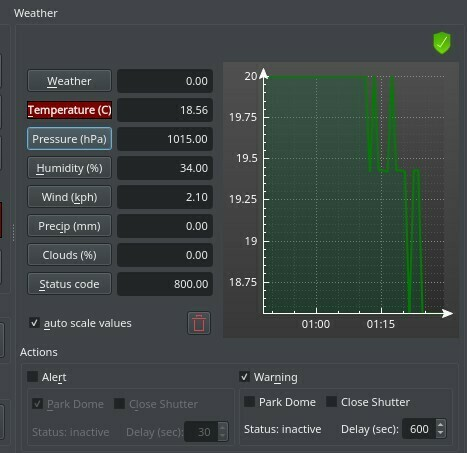
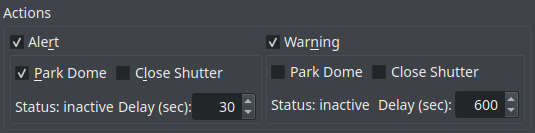

Observatory
Introduction
The observatory module is used to manage the dome and weather-triggered shutdown procedure. It has weather data directly displayed in the module. Along with the configurable thresholds for Warning and Alert states, you can rest easily knowing that KStars can take the appropriate actions to protect your observatory from adverse weather conditions. The observatory module also includes a dedicated weather widget with love plotting for each parameter.

Dome

- Position: Controls the position of the Dome.
- Motion: You can move the Dome in four ways.
- Absolute: Select the absolute position you want the Dome to move and then click on Move (abs). This will move the Dome to the absolute position you set.
- Relative: Select the amount of degrees (either positive or negative) you want the Dome to move from the current position and then click on Move (rel). This will move the Dome to the relative position you set.
- Clockwise (CW): Rotates the Dome Clockwise forever until you click on Abort.
- Counter Clockwise (CCW): Rotates the Dome Clockwise forever until you click on Abort.
- Slaving: If enabled, Dome motion will follow telescope motion.
- Park/Unpark: Park or Unpark the Dome. For advanced control, please use the INDI Control Panel.
- Abort: Aborts the Dome motion.
Shutter

- Open/Close: You can open or close your shutter through the observatory module.
Observatory Status

- Dome: If selected, the dome needs to be unparked for the observatory status being "READY".
- Shutter: If selected, the shutter needs to be open for the observatory status being "READY".
- Weather: If selected, the weather needs to be OK for the observatory status being "READY".
- Ready: Observatory status. Select the observatory elements that are relevant for the status:
- Dome: unparked → ready
- Shutter: open → ready
- Weather: OK → ready
Weather

Current data of the weather sensors. Click on the sensor name to display its data over time.
- auto scale values: Scale the value axis to the current value range.
- trashcan: Clear sensor data history.
- Graph: You can see the values of both axes if you hover over the graph. You can zoom in or out using the scroll wheel.
Actions

- Alert: Check this checkbox in order to get an Alert whenever any weather value goes under or above the range set in your weather driver INDI Control Panel.
- Park Dome: Parks the dome whenever you get an alert.
- Close Shutter: Closes the shutter whenever you get an alert.
- Status: Shows the status of the alert.
- Delay (sec): Delays the alert after n amount of seconds.
- Warning: Check this checkbox in order to get an Warning whenever any weather value is close to going under or above the range set in your weather driver INDI Control Panel.
- Park Dome: Parks the dome whenever you get a warning.
- Close Shutter: Closes the shutter whenever you get a warning.
- Status: Shows the status of the warning.
- Delay (sec): Delays the warning after n amount of seconds.